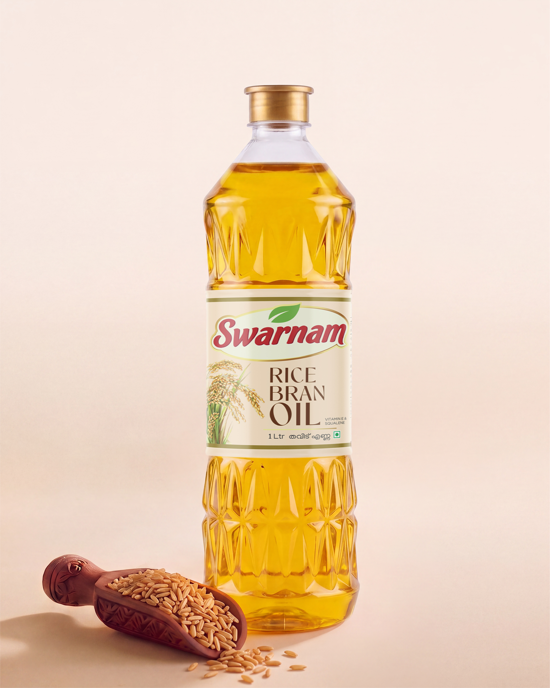

Bringing together nutritional goodness and everyday versatility, Swarnam Rice Bran Oil is a thoughtful choice for modern kitchens. Extracted from the bran of rice, this edible oil is valued for its balanced fatty acid composition and naturally occurring nutrients. With its mild flavour and versatility, it blends effortlessly into everyday cooking, making every meal a little more wholesome.

Its mild flavour makes rice bran oil suitable for preparing a variety of everyday dishes without overpowering the natural taste of ingredients.
Its relatively high smoke point makes it suitable for deep frying, helping achieve evenly cooked and crispy preparations.
Works well for sautéing vegetables, stir-frying and preparing quick meals while allowing the flavours of other ingredients to stand out.
Can be used in baking and grilling, making it a versatile addition to different cooking styles and recipes.
Contains monounsaturated and polyunsaturated fatty acids, including oleic acid and linoleic acid, which contribute to its distinctive nutritional profile.
A characteristic component of rice bran oil, gamma-oryzanol is a naturally occurring group of antioxidant compounds.
Contains naturally occurring vitamin E compounds, including tocopherols and tocotrienols, which have antioxidant properties.
Contains a combination of saturated, monounsaturated and polyunsaturated fatty acids, making it a versatile option for everyday cooking.
Rice bran oil is extracted from the outer bran layer of rice grains. It is processed and refined to produce edible cooking oil.
Rice bran oil is known for its combination of fatty acids and naturally occurring compounds such as gamma-oryzanol, tocopherols and tocotrienols.
Yes. Its mild flavour and versatility make it suitable for everyday cooking methods, including sautéing, frying and stir-frying.
Yes. Rice bran oil generally has a high smoke point, making it suitable for deep frying and other high-temperature cooking methods.
Store it in a cool, dry place away from direct sunlight and heat. Keep the container tightly closed after use to maintain its quality and freshness.